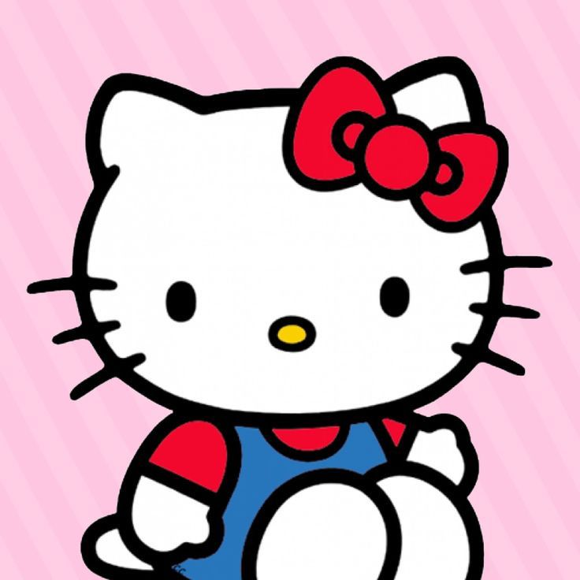
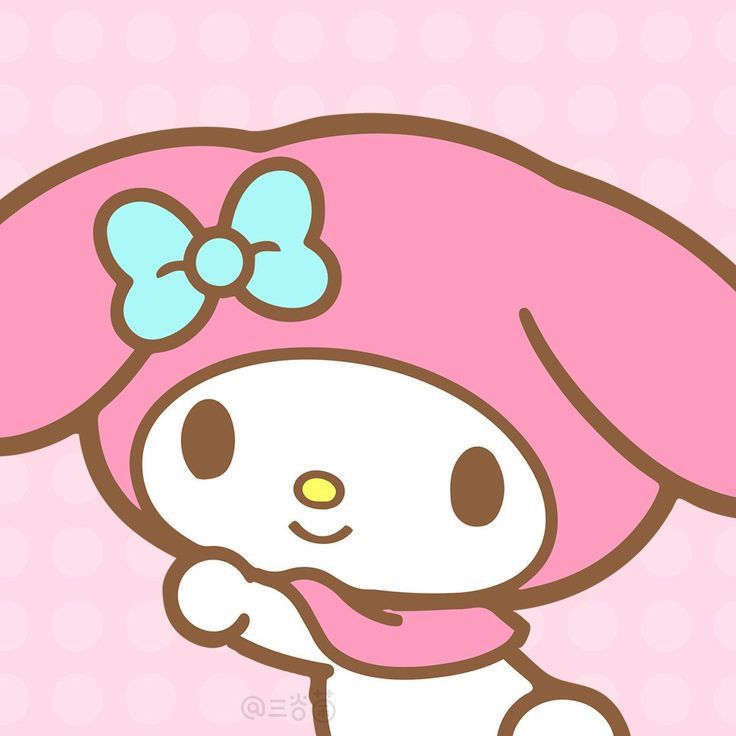
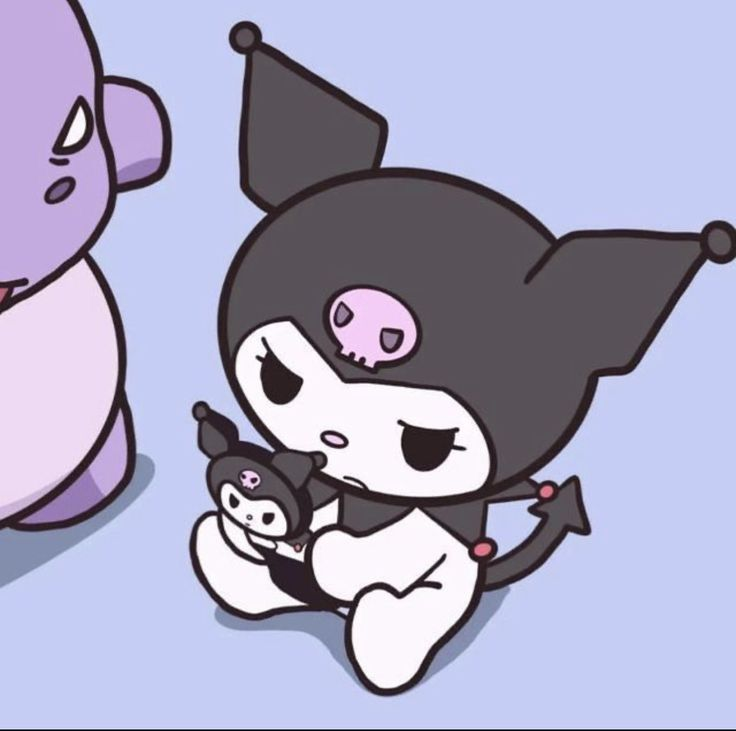
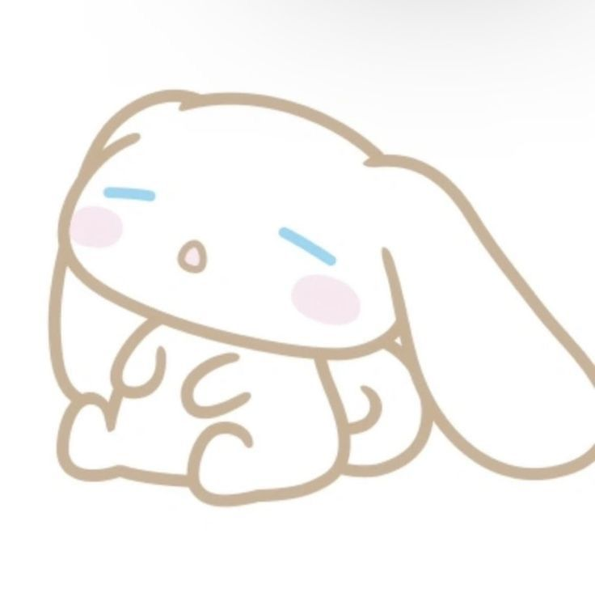
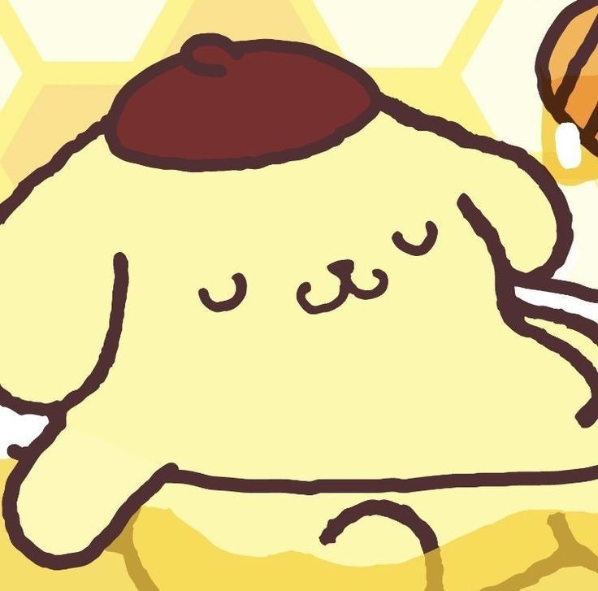
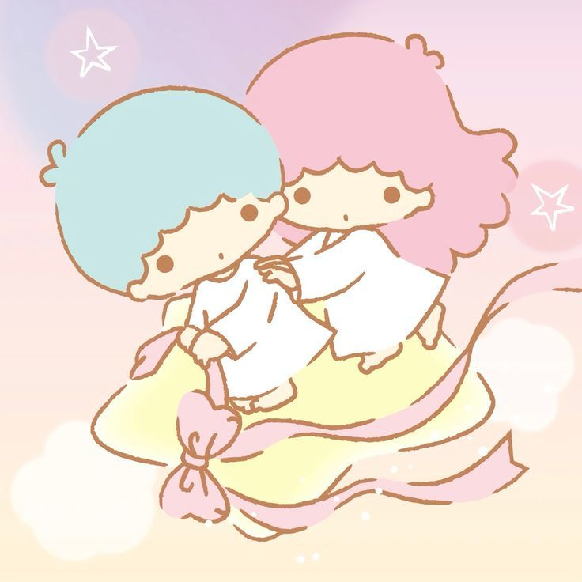
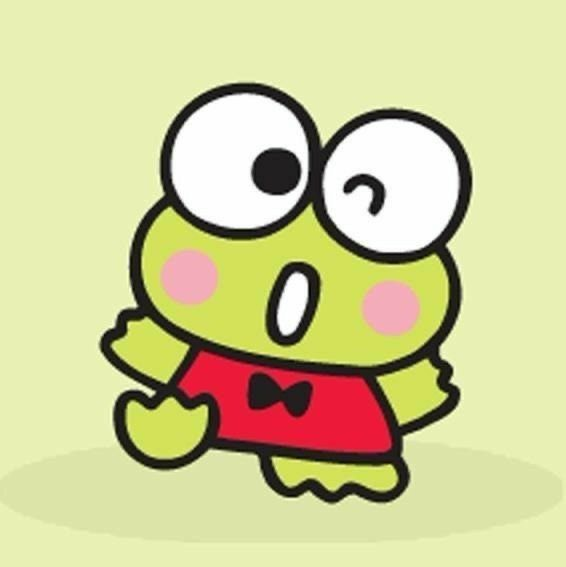
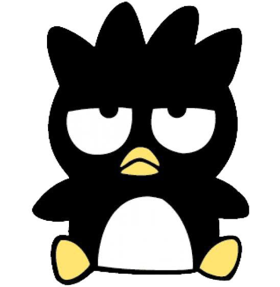
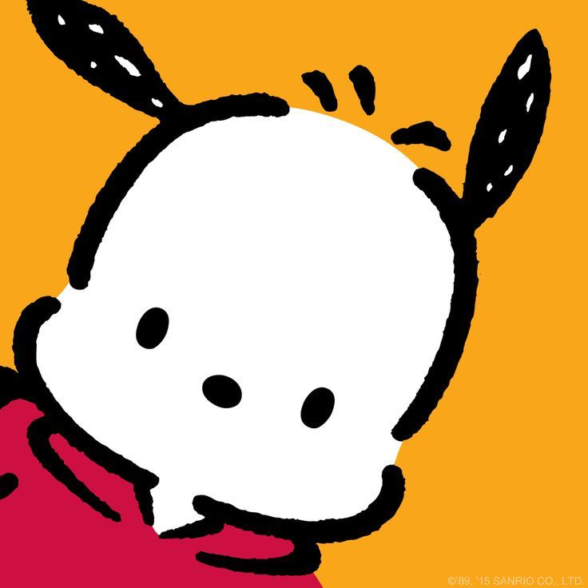

"Então, aqui vão três mensagens em Hello Kitty: Primeiro você deve ser amado, e você precisa ser bom com os outros para ser amado. O laço (que a Hello Kitty usa) representa as conexões humanas. Nós devemos nos dar bem um com o outro. Também, não ter boca (a Hello Kitty não possui boca) signfica que precisamos nos expressar com nossas ações, não apenas com palavras. Esses são os significados" - Yuko Shimizu, criador da Hello Kitty, sobre o que ela representa
A Sanrio, fundada em 1960 por Shintaro Tsuji, é mais do que apenas uma empresa, é um fenômeno cultural global que espalha alegria e fofura através de seus personagens icônicos. Com sede em Tóquio, Japão, a Sanrio se dedica a criar produtos, serviços e experiências que promovem a comunicação e a criatividade, inspirando sorrisos em pessoas de todas as idades e origens.
A jornada da Sanrio começou com um sonho simples: tornar o mundo um lugar mais feliz. Shintaro Tsuji, fascinado pela beleza e inocência das crianças, buscava maneiras de capturar essa essência em produtos que pudessem levar alegria às pessoas. Em 1974, essa visão se concretizou com o nascimento de Hello Kitty, a gatinha branca sem boca mais famosa do planeta. Rapidamente, Hello Kitty conquistou o coração do público, tornando-se um símbolo global de amizade, gentileza e positividade. O sucesso estrondoso da personagem impulsionou a Sanrio a expandir seu universo de personagens, criando uma constelação de estrelas kawaii como My Melody, Little Twin Stars, Cinnamoroll, Pompompurin, Gudetama, Aggretsuko, Chococat, Badtz-Maru e Keroppi, cada um com sua personalidade e história únicas.
A missão da Sanrio vai além da venda de produtos. A empresa se dedica a criar um estilo de vida "Small Gift, Big Smile", onde pequenos presentes podem gerar grandes sorrisos. Através de seus personagens cativantes e produtos criativos, a Sanrio busca inspirar momentos de felicidade genuína, conectando pessoas e promovendo a positividade no mundo.
A Sanrio oferece uma ampla variedade de produtos com seus personagens adoráveis, desde itens de papelaria e brinquedos até roupas, acessórios e utensílios domésticos. A empresa também se dedica a experiências imersivas, como parques temáticos, cafés temáticos, shows e eventos. Além disso, a Sanrio explora o mundo digital com jogos, aplicativos e conteúdo online para alcançar ainda mais fãs em todo o planeta.
A Sanrio transcende o mercado de produtos, tornando-se um ícone da cultura pop japonesa e um símbolo global de fofura. Seus personagens cativantes e mensagens positivas inspiram pessoas de todas as idades e origens, promovendo a gentileza, a criatividade e a positividade. A Sanrio contribuiu significativamente para a popularização da cultura kawaii no mundo, tornando-se uma referência em design, moda e entretenimento.
A Sanrio é mais do que apenas uma empresa, é um universo de felicidade e fofura que espalha alegria e positividade pelo mundo. Com seus personagens icônicos, produtos criativos e experiências imersivas, a Sanrio inspira momentos de felicidade genuína e conecta pessoas de todas as idades e origens. A empresa se dedica a tornar o mundo um lugar mais feliz, um sorriso de cada vez.
Voltar ao Topo| Personagem | Descrição |
|---|---|
|  | A personagem mais icônica da Sanrio, ela retrata um gatinho branco com laço vermelho na orelha esquerda. Apesar de não ter uma boca visível, ela é conhecida por espalhar alegria e felicidade. A Hello Kitty tornou-se um ícone cultural global, estampando uma infinidade de produtos, desde brinquedos e roupas até utensílios domésticos e até mesmo parques temáticos. |
|  | Uma coelhinha antropomórfica fofa com orelhas cor-de-rosa, My Melody é conhecida por seu capuz vermelho ou rosa na cabeça. Ela é descrita como uma garota gentil e amigável que adora cozinhar, costurar e passar tempo com seus amigos. |
|  | Kuromi é uma coelhinha roxa com orelhas pretas e um laço vermelho na cabeça. Ela é conhecida por sua personalidade travessa e seu amor por rock'n'roll.Kuromi é amiga de My Melody, mas seu temperamento é o oposto da doce e gentil My Melody. Ela é mais rebelde e sarcástica, mas ainda assim tem um coração bondoso. |
|  | Cinamoroll é um cachorrinho branco e fofo com longas orelhas azuis e grandes olhos azuis.Seu nome é uma combinação das palavras "cinnamon" (canela em inglês) e "roll" (rolo), refletindo sua adorável aparência e cor creme. Cinamoroll é frequentemente retratado voando com suas grandes orelhas |
|  | Um cachorrinho dourado com uma boina marrom na cabeça, Pompompurin é conhecido por sua personalidade gentil e sonhadora. Ele adora pudim e passar tempo com seus amigos. |
|  | Kiki (o irmão) e Lala (a irmã) são dois personagens estelares que têm um visual angelical, com cabelos azuis e rosados e asas. Eles vivem em uma nuvem chamada Dream Star Cloud e têm aventuras encantadoras juntos. Os dois são conhecidos por espalhar alegria e felicidade onde quer que vão. |
|  | Keroppi é um sapinho verde com grandes olhos redondos e uma boca larga em forma de sorriso. Keroppi vive na aldeia de Donut Pond com sua família e amigos, e ele adora esportes, aventuras ao ar livre e brincadeiras. |
|  | Um pinguim mal-humorado e rebelde que muitas vezes é visto com uma boina preta na cabeça e um sorriso sarcástico no rosto. Badtz-Maru gosta de quebrar as regras e fazer suas próprias aventuras. Ele é conhecido por sua atitude de "não ligo" e é popular entre os adolescentes. |
|  | Pochacco é um cachorrinho branco com grandes orelhas redondas e um sorriso alegre. É conhecido por sua natureza curiosa, animada e amigável. Pochacco é frequentemente retratado vestindo uma camiseta listrada azul e branca e segurando uma bola de futebol, refletindo seu amor por esportes e atividades ao ar livre. Ele vive na cidade de Pom Pom Island e é cercado por uma variedade de amigos animais, incluindo um coelho, um pássaro e um gato. |